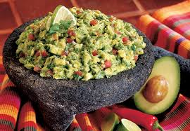

Ciudad:Moscú
La ensaladilla rusa es un plato típico que se ha popularizado en España pero que no es originalmente de aquí
Patatas 4
Mayonesa 200g
Ralladura de limón 1
Leche 30ml
Mostaza Dijón 15ml
Huevo 4
Pimienta negra
Sal
Cebollino
Pela las zanahorias. Pon a cocer las patatas y las zanahorias durante 25 minutos en agua hirviendo con sal. Introduce también los huevos y sácalos con cuidado cuando haya pasado 10 minutos de cocción. Deja enfriar, pela y corta en trocitos. Deja enfriar las patatas y las zanahorias. Pela las patatas y córtalas en daditos del mismo tamaño. Haz lo mismo con las zanahorias. Escurre el atún y los guisantes. Corta los pimientos morrones en tiras. Mezcla en frío la patata, la zanahoria, los guisantes, los pimientos y el atún.
Aquí podeis consultar una web de recetas Web
Aquí tenéis la receta en pdf para descargar pdf
Vista previa
Ciudad:Moscú
La ensaladilla rusa es un plato típico que se ha popularizado en España pero que no es originalmente de aquí

2 Aguacates
Una cucharadita de cilanto
Jugo de 2 limones
Un chorrito de aceite
Queso de cabra desmoronado
Media taza de semillas de Granada
Palitos de pan
Sal
Pimienta
Pela las zanahorias. Pon a cocer las patatas y las zanahorias durante 25 minutos en agua hirviendo con sal. Introduce también los huevos y sácalos con cuidado cuando haya pasado 10 minutos de cocción. Deja enfriar, pela y corta en trocitos. Deja enfriar las patatas y las zanahorias. Pela las patatas y córtalas en daditos del mismo tamaño. Haz lo mismo con las zanahorias. Escurre el atún y los guisantes. Corta los pimientos morrones en tiras. Mezcla en frío la patata, la zanahoria, los guisantes, los pimientos y el atún.
Aquí podeis consultar una web de recetas Web
Aquí tenéis la receta en pdf para descargar pdf
Vista previa
Contacta con nosotros en:Dirección: Avenida de Colmenar Viejo Teléfono: 600000000 Emanil: recetas@recetas.com